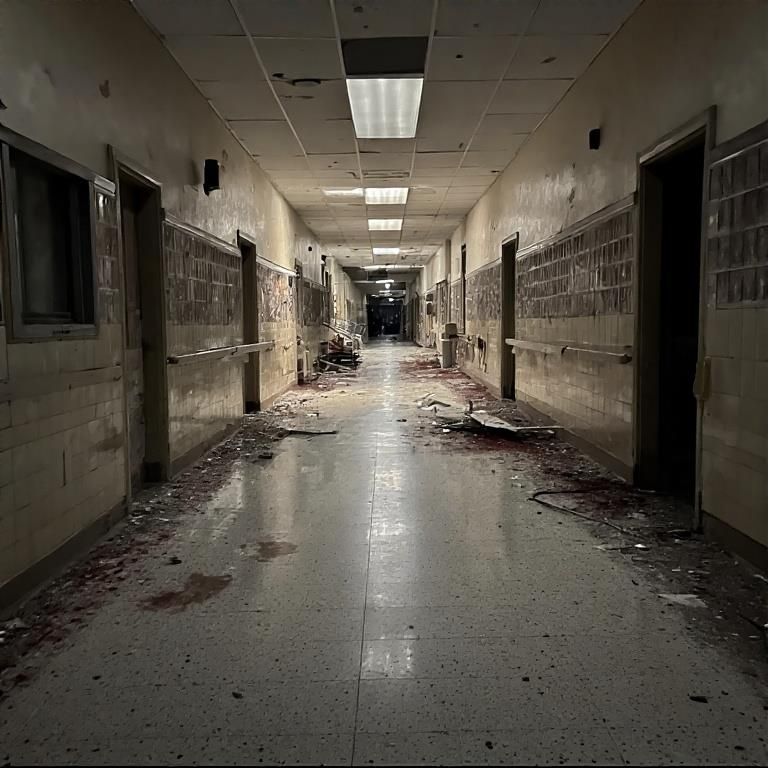
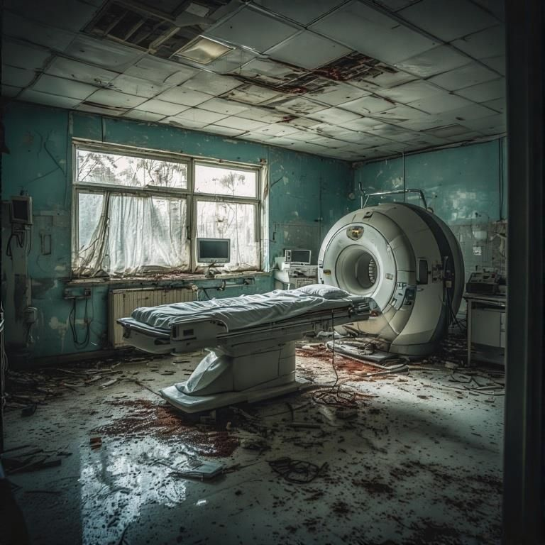

Krystal, a young paranormal investigator arrived at a abandoned hospital which had been out of service since 5 years due to classified reasons, hidden from the public and media. The patients and staff seemingly vanished overnight, leaving many people confused and sparking a lot of controversies where people even thought of a possible Alien intervention.
However, without proof, no one could make an official statement to describe the case of the abandoned hospital. Krystal decided to change that and by putting herself in harms way, she was determined to go on and explore the site herself. She spent hours, researching about the hospital’s location and history but couldn’t find any solid hint of anything that could potentially describe the sudden abandonment of the hospital.

It was 8 am in the morning and Krystal stepped out of her vehicle alone. She was a daring woman who liked to explore such eerie sites alone. Gathering her camera and other essential tools, she made her way to the entrance which was rusty and moss laden. Taking a deep breath and mentally preparing herself, she pushed open the doors and went inside. The atmosphere inside seemed normal, a mix of warm and cold. The area was dead silent and the hallways were mostly dark or hard some flickering lights in them, giving an apocalyptic vibe. At some spots, debris had fallen and chunks of concrete were scattered. Despite this, Krystal moved forward to explore, she got her camera ready and started recording the intro of her video, “Hey guys, Krystal here and today I am going to be exploring this haunted hospital where patients and staff disappeared for some unknown reason. Wish me luck.”
Just as Krystal said that, she then held her camera in her left hand and started exploring. “This place gives me the weird vibes” She whispered to the camera as she kept moving through the abandoned building all alone. Her footsteps caused occasional crunch of debris under her shoes but she kept going.

Eventually, she reached into a room and the view was horrifying. Hospital bed was destroyed with dried blood on the sheets, an MRI machine was malfunctioned and out of order, the lights flickered ominously. “Oh god, look at this guys” Krystal spoke to the camera and showed the devastated room to the camera. There was no sign of life whatsoever, torn papers scattered across the desk, covered in ink and blood. Krystal’s gaze locked on to one specific paper, she picked it up and it happened to be a report of a patient. “Emily, 55kgs, 20 years old, 5 feet 7 inches, female, diagnosed with cancer” Krystal read the information on the paper with sorrow and grief in her voice, she then read the date and was shocked ‘Report generated: 2/1/2020’ The report was from 5 years ago, exactly the time told when all patient and staff suddenly disappeared and the hospital was abandoned. Krystal was shocked to see this, she folded the paper and tucked it into her pocket immediately, “Oh my goodness guys, I just found a major evidence” she spoke to the camera, catching the moment on cam. She then looked around with renewed energy, hoping to find anything else from that room but unfortunately, she didn’t find anything useful.
Suddenly, a sound from outside caught her attention and she quickly bolted out of the room but saw nothing, the sound felt like something fell, but from where?
After searching around for some minutes, she made her way to another room where she suspected the sound to have came from. She entered the room to find similar setting. Another hospital bed was ruined, its sheets torn and a bit of blood dried on it. “What the heck actually happened here?” Krystal spoke to herself more than the camera as she continued to explore the room, hoping that she would find anything useful in here. While observing, she heard footsteps as if something or someone ran across the hallway outside the room. Krystal’s heartbeat doubled, her eyes widened. She immediately picked up her camera and ran out of the room into the hallway to see who caused those footsteps but she saw nothing once again.
Krystal started to think that she was going paranoid because she was exploring an abandoned building all alone but she didn’t give up her exploration. Glancing at her watch, she realized it was already 12pm, around 4 hours had passed since Krystal had arrived but it didn’t make sense to her, how did 4 hours pass so quickly and Krystal had only managed to check a handful of rooms while there being hundreds of others left unexplored.
Another realization dawned on her that she won’t be done until night and at that time, the darkness outside would make her return to home, hazardous.
One side of her screamed to just pack up by 4 pm and leave before the dark arrives but another, more daring side urged her to stay and complete her exploration even if she has to return in the dangerous darkness of the night. Krystal fell into an internal debate with herself, she contemplated whether to return or not early because if she did return early, then people would criticize her attempt for exploring in the first place if she couldn’t complete her objective. However, if she finished her exploration, she wouldn’t face criticism but would have to face the hazards of returning at night since the journey is long.
Finally, Krystal made up her mind, she was going to finish her exploration whatsoever and face the inevitable darkness, only to keep her fame and for the entertainment of her viewers, she put her life at risk. With adrenaline coursing through her veins, she resumed her exploration, determined not to get distracted as she got dead serious. She went into a laboratory room and saw broken tubes, apparatus and some glass shards scattered on the main table and the floor. She carefully avoided getting something plunged into her skin and looked around the room. A subtle sound pierced the silence, causing Krystal to freeze dead in her tracks, she knew the sound came from the room she was in but didn’t know what caused it. However, that changed quickly as she saw something like a shadow, or something that resembled a shadow.
Krystal burst out of the room and ran as fast as she could. She felt her heart pumping madly and her muscles worked overtime to support her speed, she didn’t even glance back but just kept running. That one encounter with something spooked her so much that she ran blindly and was now far away from the laboratory room, she stopped to catch her breath, her chest heaving and her face embraced an exhausted look, “Guys you won’t believe, I.. I swear I saw someone in that room or something, I just don’t know what it is but I am sure it is something, I don’t know if it was caught on camera but genuinely I am freaked out of my soul, I am not even lying.”
Small tears filled her eyes due to the terror but she wiped them off, not wanting to show her vulnerable side to the camera and subsequently the audience. She wanted to go back home but knew she couldn’t as she had made the commitment to stay and finish her exploration. She then made her way in the opposite wing of the building where she found the administration room. Her eyes light up at the sight and she wasted no time and went in. The admin room was oddly a bit better in condition, compared to the other rooms which felt like they had been through a warzone. Krystal opened drawers and cabinets to find any piece of evidence to collect and her work paid off when she found an ID, ‘Dr Lil Tim, ENT specialist, ID Issued: 2/1/2020’ Upon reading the information, Krystal noticed the date, it matched the report of a patient she found earlier, she quickly took out the report from her pocket and read it, ‘2/1/2020’. This confused Krystal, she thought of a possible connection between the patient and the doctor but it didn’t make sense because the Doctor’s ID said he was an ENT specialist while the patient, Emily, was diagnosed with Cancer.
Anyhow, Krystal quickly tucked the pieces of evidence back into her pocket but then she realized something. If the Doctor ID was in the admin room, that means the Doctor himself never got the ID because if he disappeared, the ID would have disappeared with him. Krystal didn’t give much thought to the endless possibilities, instead, she focused on gathering more evidence of what could’ve happened 5 years ago. She found another document hidden in a drawer, she quickly read it, ‘Biohazard leak! All systems to be shut down, contamination spreading will cause death, evacuate.’
The document seemed like an order which never reached its intended location, but Krystal now knew what happened and it sounded painful. Still, she wasn’t sure as to how the staff and patients disappeared. She saw a lifeless computer sitting on the main desk and approached it. “Seems like it is lacking power.” Krystal plugged the lead into the switch but nothing happened, she felt disappointed but then suddenly, the screen flickered on and asked for an ID to be input. She didn’t know which ID to input but then remembered that she had collected a Doctor’s ID and she quickly input the ID number. The screen displayed a document which shocked Krystal. ‘This is Dr Tim writing, Mysterious sighting reported in main lobby, people have been heard screaming and some suddenly vanishing into thin air, a biohazard leak reported, I have a young female patient with me, requesting urgent back...’
The document was incomplete but seemed to be a report of the events that happened on the day when the hospital was abandoned, what was even more shocking for Krystal was that the name and date on the document, matched those on the Doctor’s ID she had found. ‘Dr Lil Tim’ and ‘2/1/2020’. This spooked Krystal out of her body, she vigorously scanned the ID and then the document displayed on screen and both, the name and the date were same...
A chill ran down her spine as she couldn’t believe the amount of evidence she had discovered. The date on the patient’s report, Doctor’s ID and the document, were the same, ‘2/1/2020’ but something came to Krystal’s mind. The doctors ID read that it was issued on the same date but that meant that Doctor Lil Tim was a new Doctor who was hired at the hospital and whatever happened on that day, he consequently vanished before even starting the job and he was desperately trying to convey the message to helpline number but didn’t manage to. Along with that, the message mentioned a young female patient but the name wasn’t specified. Krystal knew she found the report of a patient named Emily who seemed young according to the date written on the report, so she assumed that Doctor Tim was trying to provide assistance to her but couldn’t. This struck another thought in Krystal’s mind which she had before as well, that Doctor Tim was an ENT specialist and Emily was diagnosed with cancer, it didn’t make sense for Doctor Tim to be assisting Emily.
Krystal was in deep sorrow and empathy but there was no one there to offer it to. She glanced at the time and realized it was near evening already, around 5:30 pm. She had gathered monumental evidence about what potentially could’ve happened on ‘2/1/2020’ that left this hospital in ruins. She exited the administration room and let out a deep sigh. She had unexpectedly completed her exploration before night struck and so, she decided to go back. She approached the main doors but her blood ran cold. They wouldn’t budge...
She vigorously yanked on the door handle but to no avail. It was draining her energy and strength instead, tears filled her eyes as she panicked, not wanting to accept the brutal reality that she was indeed, Trapped...
“Open the damn up!” she growled in anger but the door felt like it was tightly sealed with no way out. She fell to the ground in defeat, her shoulders slumping and arms aching from the intense pulling. She took out her phone and tried to call for help but of course, there were no signals. Krystal was now stuck in a dire situation, her mind going blank due to panic and stress of the harsh reality she was in. Suddenly, she heard something coming from a room, it sounded like something was buzzing or humming. Intrigued, she slowly got up and with measured steps, made her way to the room. A faint glow was visible from the slightly ajar door and as soon as she pushed it open, she stopped dead in her tracks. She saw a person, presumably a Doctor, standing right before a portal, his eyes blazing with otherworldly light. He let out an ominous chuckle, “Seems like you have discovered about me, huh?” he asked from Krystal who was caught off guard, “Doctor...Tim?” she managed to utter with a shaky voice and the Doctor nodded subtly with a devious grin, “You shouldn’t have come here in the first place, Krystal”
Krystal was taken aback by the Doctor knowing her name, she didn’t expect it simply. She screamed and tried running away but as soon as she turned back, she saw a crowd around her, of Patients, Doctors, nurses and other staff, all seemed to be walking corpses and in lead, was a young patient, presumably Emily. Krystal screamed at the top of her lungs as she was trapped. The staff and patients giggled and chuckled demonically and chanted, “You’ve made a mistake, you will be a part of us”
Krystal was then pushed back by the squirming masses as they forced her into the room where the portal was, Dr Tim grinned mischievously and as soon as Krystal got near, he pushed her into the portal, silencing her screams once in for all. The hospital went dead silent again, the hallways went empty, the rooms shrouded back by darkness and Krystal... she was now an addition to the people who had disappeared five years ago on ‘2/1/2020’...